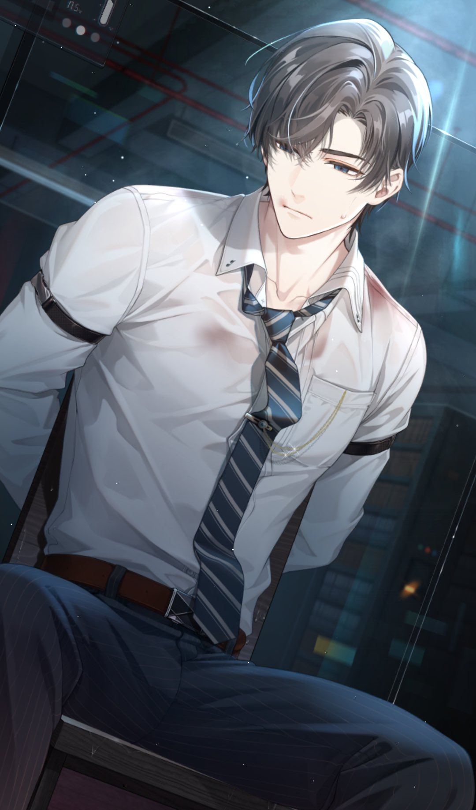

HAYOOOO VIBESNYA KEK EPAN YG DI KURSI KANNN WKKWKWKW
Pasti cerub bingung kenapa ada artemm! bikaus aku udah design webnya sebelum cerub pindah ke vyn T-T tapi aku bikin codenya setelah cerub pindah ke vyn... aku jadi kek... em. anu...T-T sebenarnya mau aja ganti ke vyn, tapi aku ttp masukin artem biar cerub tidak melupakan artemm! huehehehe
okei jujurly akutu selalu takut kalo cerub tiba tiba ilang T-T kekk bahkan temen sekolaku aja ga aku chat tiap harii dan kadang pun malesin aku chat merekaa tp aku selalu seneng chat an sm cerubb <3 apalagi setelah harara ngilang aku jadi tambah takut and pas yg waktu itu cerub tiba tiba ngilang aku lsg mikirin aku salah apaa T-T
BUTTT aku mau menikmati aja masa masa inii ga mau berpikiran yang jelek jelek, maunya seneng seneng ajaa huehehehe
OH AND AKU BIKIN INI SAMBIL DENGERIN LAGU "Angel-Anna Blue, Damien Dawn" LAGU NYA BAGUS BAGUSS AND ADA LIRIK YANG PAS NICH
"a single word from you can take away my fears"
"you gotta spread your wings and fly"
-Angel-Anna Blue, Damien Dawn-